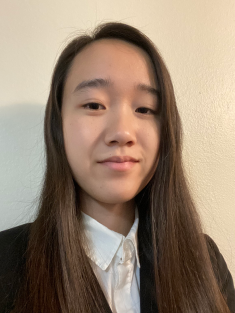

Sage Luong
Sage is a third-year Cognitive Science major with a minor in Digital Humanities at UCLA. My career interests include UI/UX, web design, graphic design, and psychology! Bullet journaling is one of my favorite hobbies, and I enjoy having a physical spread compared to the majority of my work which is purely digital. Experimenting with different typographies, color schemes, and themes is the best part of it all! I also enjoy watching TV shows, including animation (which isn't just for kids)! My favorite series of all time is Avatar the Last Airbender! I love it so much that I've probably watched the entire series at least 8 times, and I never tire of revisiting it! I also enjoy playing video games with friends such as Stardew Valley, Animal Crossing, and Overwatch!